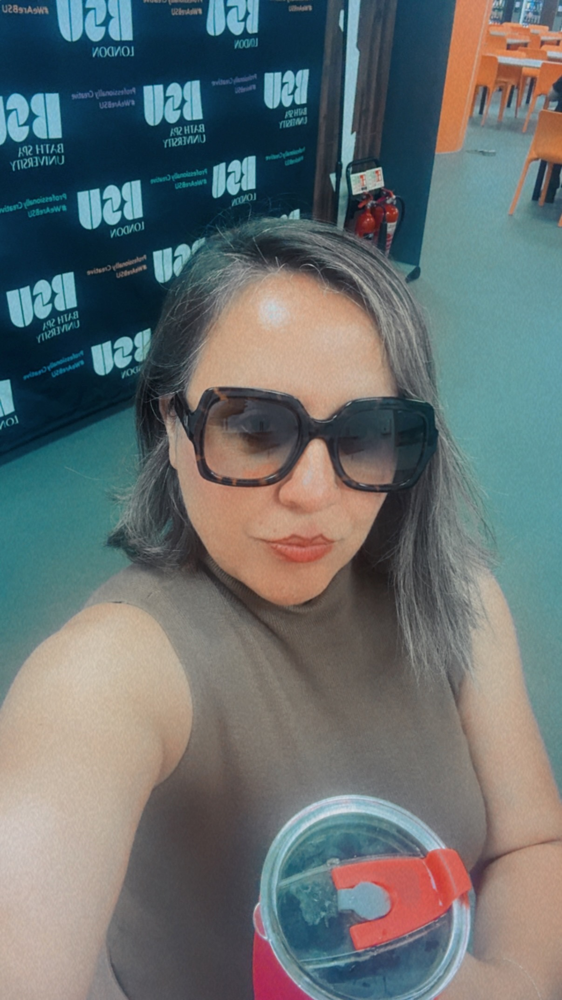
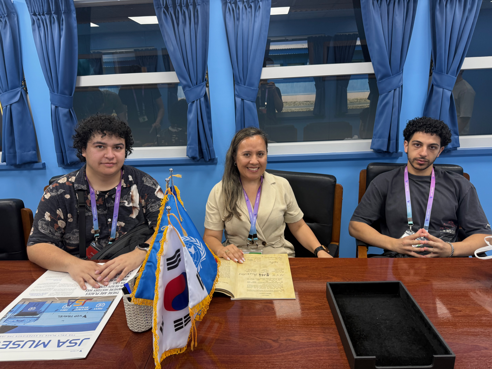
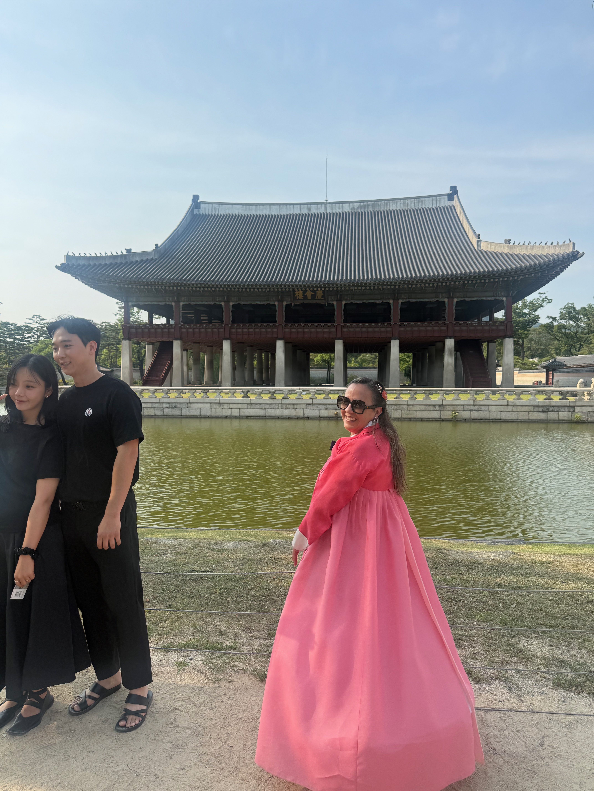
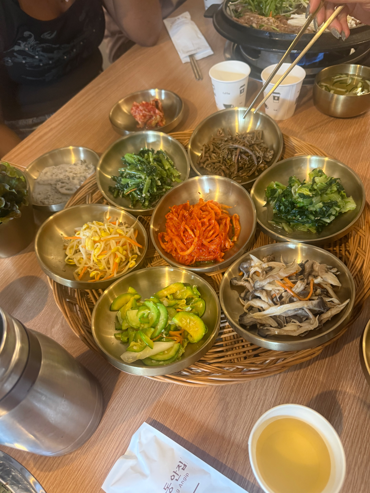
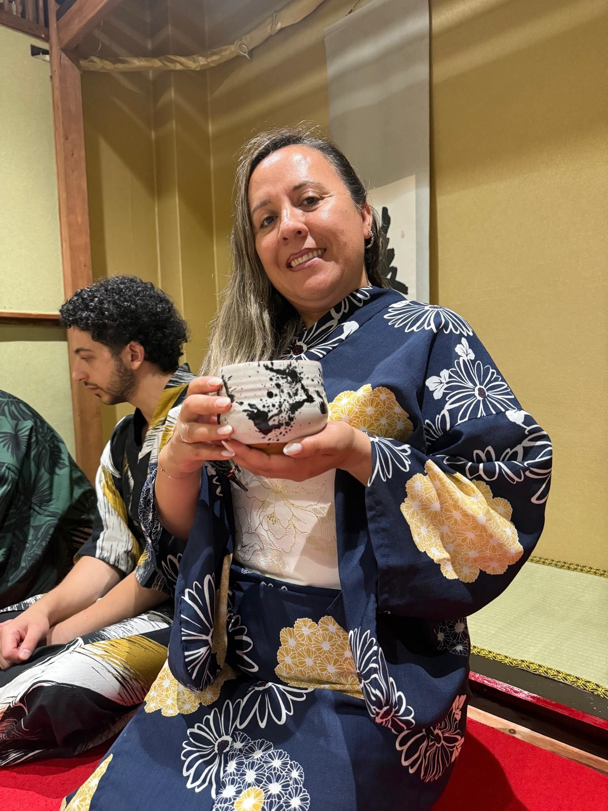
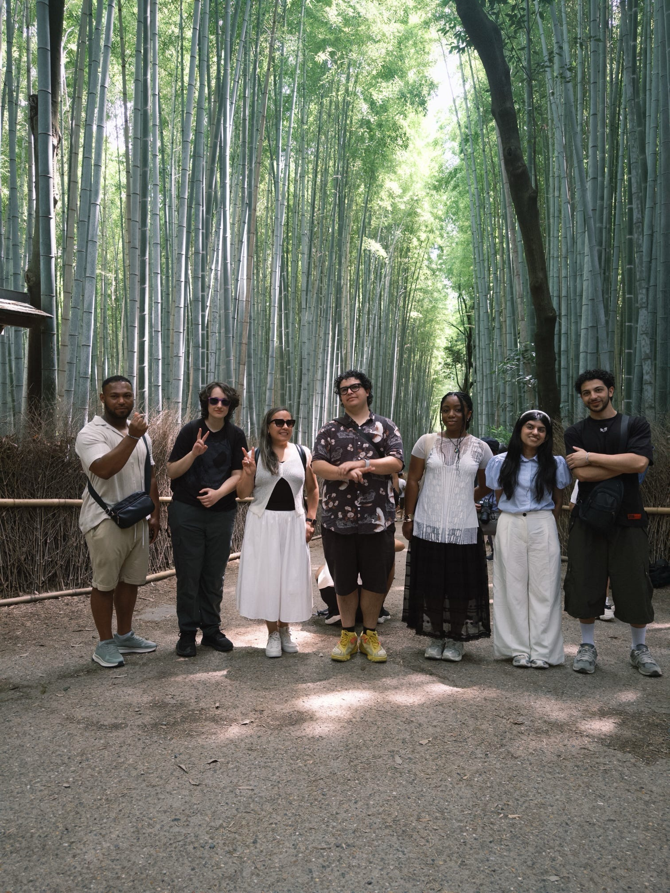
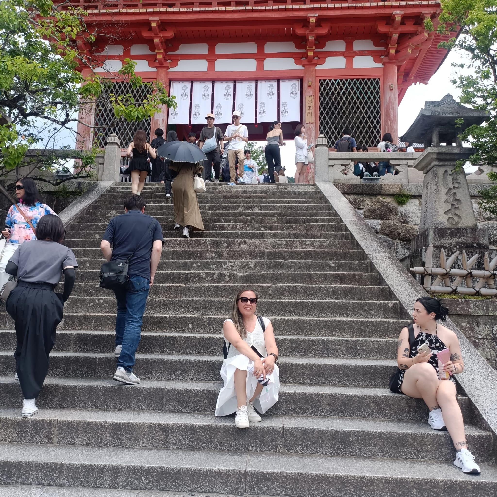

University IT and Teaching Internship
Seven weeks of practical learning, supporting the IT team and helping students with classroom activities. I enjoyed applying my knowledge and learning from staff.

Maria Fernanda | Second-year Computing student
Learning, creating and exploring technology.
Hello! I am Maria Fernanda, a second-year Computing student at Bath Spa University London. I enjoy learning how technology works, building websites and solving problems through programming. My interests include software engineering and cybersecurity.
I was selected for a seven-week internship at my university, where I worked with the IT team and supported teaching as a Teaching Assistant (TA). I helped students during practical activities and gained experience in IT support.
During the internship, I used tools such as Topdesk and Evision and helped with Scratch learning activities. This opportunity helped me develop my communication, teamwork and troubleshooting skills. I learned a lot and became more confident supporting others in a university environment.
I also took part in a university-funded international programme in South Korea and Japan. I learned about local cultures, traditions and food. Exploring these countries encouraged me to try new things, appreciate different ways of life and become more independent.
These are the skills I am developing through my studies, practical projects and work experience.
Creating structured webpages and practising responsive layouts with Flexbox and Grid.
Learning to make webpages interactive using events and changes to page content.
Writing small programs and practising variables, conditions, loops and problem-solving.
Designing related tables and writing queries using MySQL.
Helping users, investigating technical problems and gaining experience with support tools.
Creating wireframes and prototypes in Figma, with attention to users' needs.
Using VS Code to write code and GitHub to organise and share my projects.
Supporting students, explaining ideas clearly and working with people from different backgrounds.
Learning from new situations and developing confidence through work and international experiences.
My learning continues beyond the classroom. These experiences have helped me grow personally and professionally.
Seven weeks of practical learning, supporting the IT team and helping students with classroom activities. I enjoyed applying my knowledge and learning from staff.

An opportunity to explore Korean culture, discover different foods and learn through first-hand experiences.



Exploring Japan helped me appreciate its traditions, food and everyday life, and reflect on cultural differences.



I want to create responsive and accessible websites that are easy to use on phones and computers. I also want to improve my JavaScript skills and learn to test my work more effectively.
I aim to become more confident with Python, C++ and JavaScript by building projects, practising regularly and understanding how to find and fix errors.
I want to learn more about developing useful software and protecting systems and information. This will help me decide which career path I would like to pursue.
I would like to take part in more internships and collaborative projects. I want to keep developing my technical skills, teamwork and confidence in a professional environment.
I plan to document my projects on GitHub and show what I have learned, including the challenges I faced and how I solved them.